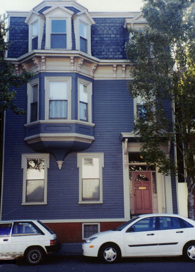
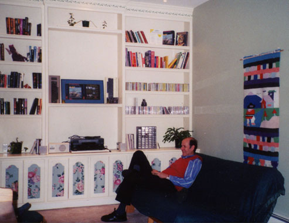
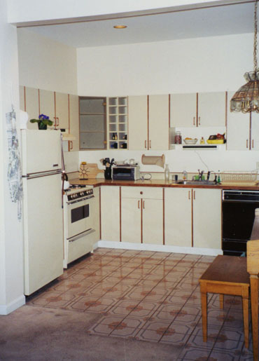

I'm now a proud first-time homeowner of a wee little place in Cambridge, Massachusetts!
It's the second-floor condo in this cute old-style building near Inman
Square:

Of course, indoor shots in a small place are really difficult without a good wide-angle lens, which I don't have unfortunately, but here are a couple pitiful attempts anyway...

The Living Room. That's my dad on the futon.

The Kitchen. Yep, that's a piano on the right. I know,
I know, pianos don't belong in the kitchen - as I said, it's a small
place. :-)
Unfortunately, none of the bedroom or study shots I've taken so far
have worked out at all.